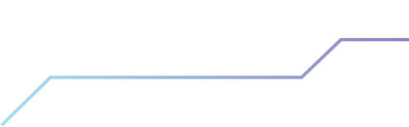

The Digital Society Research Grant (DSRG) was conceived to
contribute towards the enhancement of information resources that are
necessary and in line with changing community expectations as we
navigate the transition towards a sustainable digital civil society.
This grant aims to grow the evidence base necessary for the nation
to optimise the advancements made in communications infrastructure
and service deployment. This base will assist the development of
policy, programmes, and interventions to promote the inclusion and
participation of all segments of the population as the nation
transitions towards being a fully digitally connected and informed
society.
ABOUT MCMC
EXECUTIVE SUMMARY
MESSAGE FROM THE CHAIRMAN
MANUSCRIPTS

EXECUTIVE SUMMARY
The seventh edition of MCMC’s “Media Matters” features comprehensive
research findings that provide critical insights into various
aspects of Malaysia’s communications and multimedia landscape. This
edition encompasses 18studies funded under the Digital Society
Research Grant (DSRG) 2022 Cycle2 and 2023 Cycle 1, with research
projects focusing on public awareness, technological integration,
policy impacts, and emerging trends in the industry.
In 2024, we have made significant strides in advancing
Malaysia’s communications and multimedia landscape, driven by a
steadfast commitment to ensuring that Malaysia remains at the
forefront of emerging technology. Our pursuit to serve the
industry and the public with integrity, foresight, and
responsibility has guided every decision and initiative we’ve
undertaken.
At the Malaysian Communications and Multimedia Commission
(MCMC), our approach to regulation is deeply rooted in evidence
and research. Every decision and policy implementation is
grounded in robust data analysis. Therefore, we fund research
projects that directly support our work, ensuring we address the
current needs of the industry while anticipating future
challenges. The Digital Society Research Grant (DSRG) continues
to provide valuable insights, having awarded 66 grants as of Q2
2024.